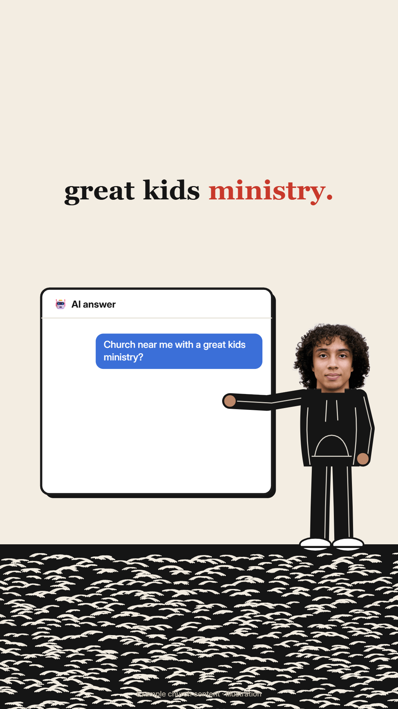
00:03.5Ask ChatGPT for aAn AI chat card types: "church near me with a great kids ministry?" Tony (placeholder) points at it.
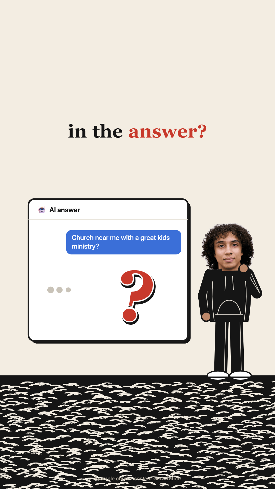
00:05.5Is your church inA big red question mark pops in, and the answer card shows "…" (empty).
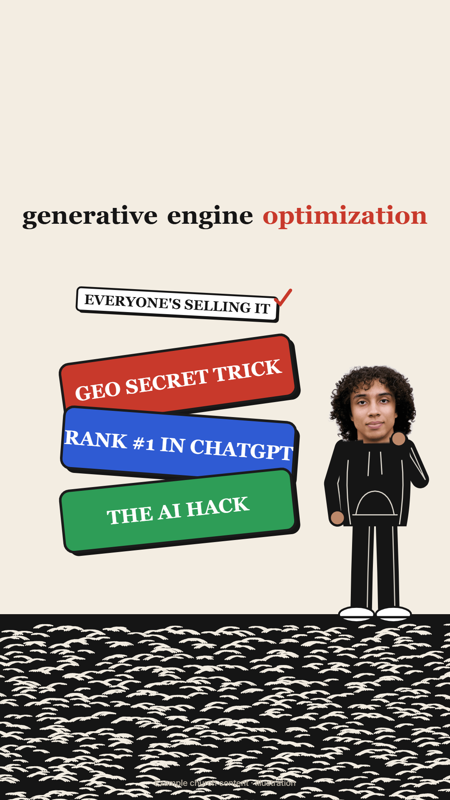
00:09.7Everyone's selling GEO,Three cards: "GEO SECRET TRICK", "RANK #1 IN CHATGPT", "AI HACK". A big red X stamps over them.
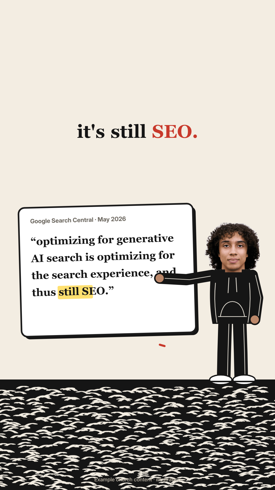
00:14.9Google literally says it'sA quote card: "optimizing for generative AI search is … still SEO", sourced to Google Search Central (May 2026).
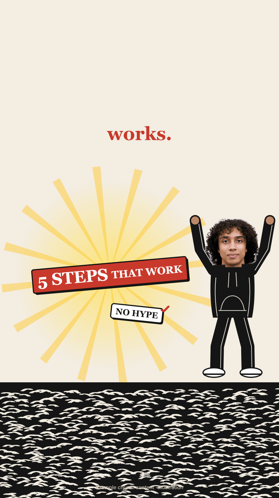
00:17.4Here's what actually works.Tony (placeholder) jumps in. A "5 STEPS" tag.
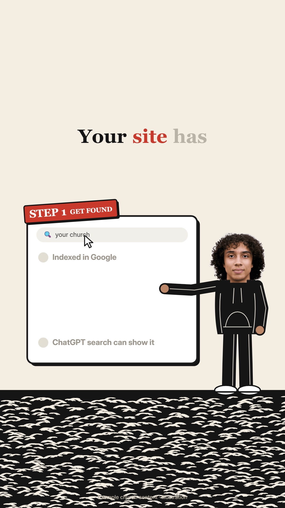
00:21.6Step one. Make sureSTEP 1 · GET FOUND. A browser card shows "Indexed in Google ✓", then a robots.txt card: "User-agent: OAI-SearchBot / Allow: /" ✓.
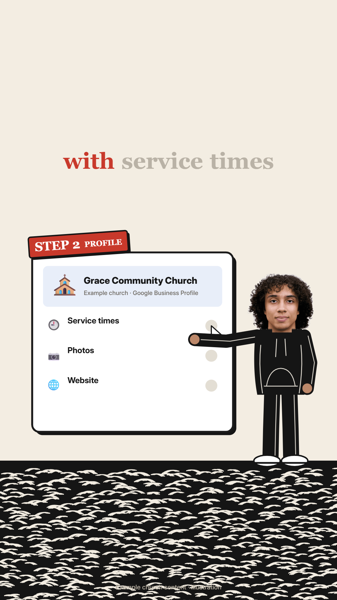
00:31.1Step two. Fill outSTEP 2 · PROFILE. A Business Profile card for a fictional church (example) with Service times, Photos and Website ticking in.
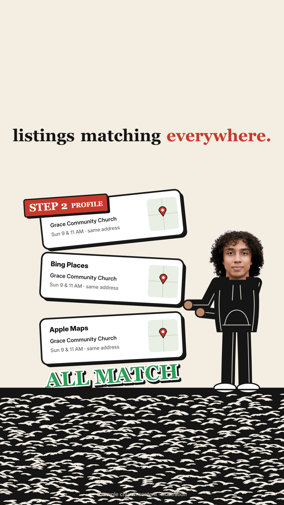
00:39.1keep your listings matchingThree small listing cards (Maps, Bing, Apple) showing the same name, address and times, each with a ✓.
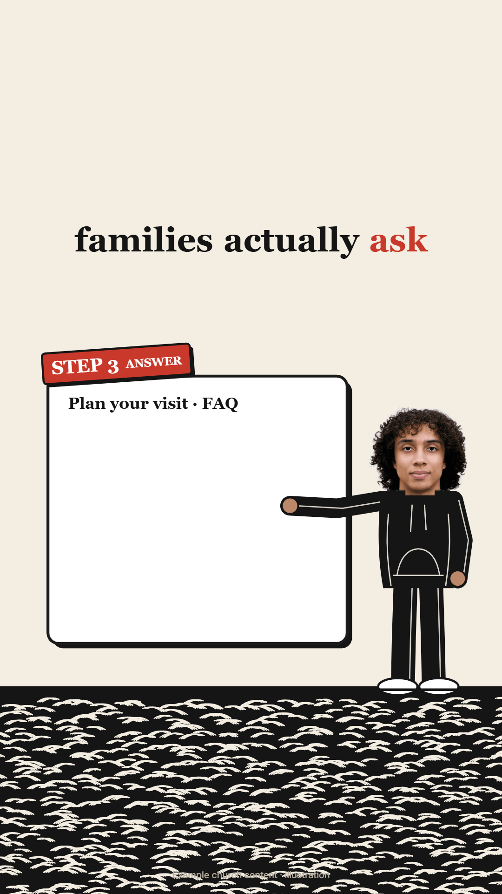
00:43.7Step three. Answer theSTEP 3 · ANSWER. An FAQ card. Each question appears as it's spoken: service time, kids, parking, what to wear.
00:54.9Step four. Post whatSTEP 4 · ONLY YOU. Three cards: Sermon, Story, Event. A crossed-out card: "copy-paste content".
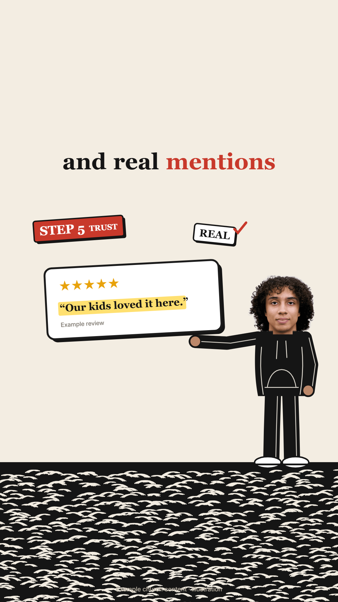
01:05.0Step five. Earn realSTEP 5 · TRUST. A ★★★★★ review card (fictional) and a local-news clipping card.
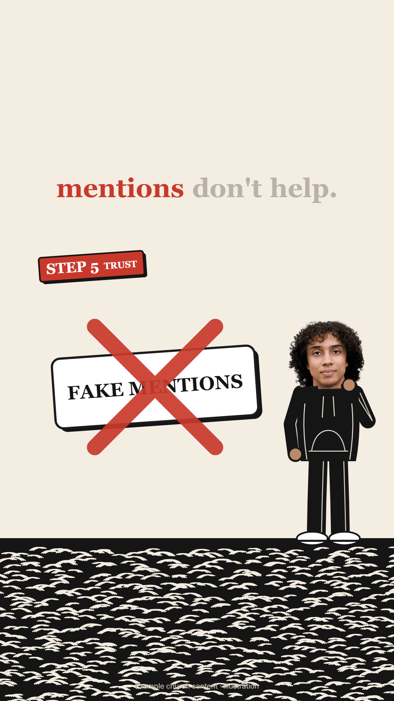
01:10.2Never fake them.A "FAKE MENTIONS" card gets a red X.
01:15.3And skip the hype.An "llms.txt (for Google)" card crossed out and a "GUARANTEED #1 IN CHATGPT" card crossed out.
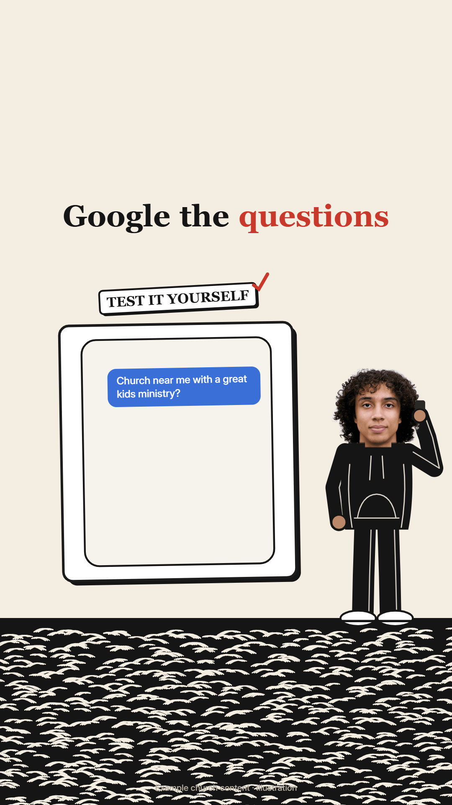
01:22.6Then test it.A phone card asks the AI the family's question, with a magnifier. Tony (placeholder) holds the phone.
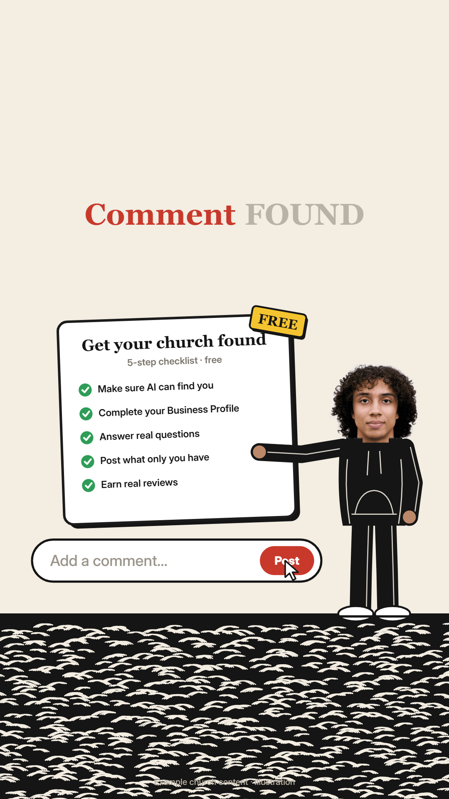
01:29.7I made a checklistA checklist PDF card with 5 ticks: "Get your church found". A comment box types "FOUND", then "Post".